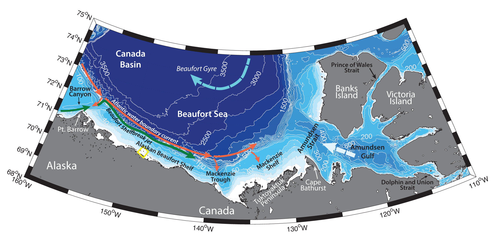

Schematic water circulation patterns and geographical place names in the Amundsen Gulf and Beaufort Shelf region. Dashed yellow line marks the studied region.
The general circulation pattern in the southern and eastern Beaufort Sea is largely driven by the bottom topography and is strongly influenced by the presence of sea ice (Ingram et al., 2008). Beaufort Shelfbreak jet, advecting Pacific-origin waters, largely dictates the hydrographic structure of the Alaskan Beaufort shelf. It is an along-slope current with an average velocity of 15 cm s-1, originating from the northward flow from the Bering Strait and flowing eastwards from the Barrow Canyon to the Canadian Archipelago in a narrow (10-15 km) bottom-intensified jet trapped by the shelfbreak (Nikolopoulos et al., 2009). During summertime, it advects warm and fresh Alaskan Coastal water (T > 3 °C) and summer Bering sea water (0 °C < T < 3 °C) at depths shallower than 100 m and therefore becomes surface intensified (e.g., Nikolopoulos et al., 2009; von Appen and Pickart, 2012). In fall and winter, the current often reverses (flows westward) under the influence of upwelling-favorable easterly winds (Nikolopoulos et al., 2009). At this time of the year it advects cold (T < -1.2 °C), salty (S = ~ 32 – 34) and rich in nutrients Winter Water (usually shallower than 150-200 m depth), formed by convective overturning in the northern Bering Sea and in the polynyas of the Chukchi Sea. During this time underlaying Atlantic water can also be entrained into the Beaufort Shelfbreak Jet (Pickart, 2004). Westerly alongshore winds (downwelling favorable), in turn, can amplify the shelfbreak current (Dmitrenko et al., 2016). Beaufort Shelfbreak jet provides an offshore source of nutrients to the shelf waters (Ingram et al., 2008).
Beaufort Shelfbreak jet can propogate far to the east along the Canadian coast. Sometimes it can reach the Amundsen Gulf – for example it has been measured at 134 °W during the Canadian Arctic Shelf Exchange Study (CASES) (Ingram et al., 2008), but more often it is thought to be transformed on its way or diverted offshore under the influence of various forcing mechanisms. For example, one of the possible mechanisms for transporting water offshore is via eddy formation. Eddies, containing Pacific-origin waters are known to be spawned from the Herald and Barrow canyons in the Chukchi Sea, as well as from the shelfbreak jets along the Chukchi and Beaufort shelves. These eddies are of anticyclonic circulation and reside between surface and subsurface layers depending on the waters, they are carrying. A large number of Pacific-origin waters eddies populate the Canada Basin (Nikolopoulos et al., 2009).
Below 150-200 m depth along the Alaskan Beaufort shelf the Atlantic Water circumpolar boundary current advects the warm and salty Atlantic Water eastwards (e.g., Rudels et al., 1994). According to Nikolopoulos et al. (2009) the Pacific/Atlantic water mass boundary in this region lies at a temperature of -1.26 °C, salinity of 33.64, and density of 27.06 kg m-3. Atlantic water can be brought up onto the shelf via upwellings (Williams et al., 2006).
Mackenzie Trough, a cross-shelf canyon in the Beaufort Sea shelf, largely influences the water exchange between the shelf break and the deep Canada basin (Williams et al., 2006). Northeasterly winds are known to cause upwelling at the site (Carmack and Kulikov, 1998), associated with a flux of nutrient-rich deeper water to the shelf, which increases primary production. The subsequent flux of shelf water masses offshore influences the development of the upper halocline in the Arctic Ocean. Storm-driven upwelling in the Mackenzie Trough has been measured to be the most intense along the entire Beaufort coast – for example, Kulikov et al. (1998) have observed upwelling amplitudes to be ~600 m. When the wind forcing subsides, the collapse of displaced isopycnals can cause an internal Kelvin wave, propagating northeastwards from the Mackenzie Trough (Carmack and Kulikov, 1998).
Another important feature of the Beaufort shelf circulation is the influence of Mackenzie river plume. Mackenzie river inflow is about 30 000 m3 s-1 in summer (with peak in May-June); during wintertime large Headwater lakes also provide freshwater input – about 4000 m3 s-1 (Ingram et al., 2008). There are two regimes of the plume distribution: upwelling-favorable winds cause northwestward propagation of the plume, where it can reach the Beaufort Gyre, while downwelling-favorable winds push the plume eastwards toward Amundsen Gulf in a coastal current. The northern propagation of the plume results in the formation of the so-called floating freshwater lake in the Beaufort Sea – Lake Mackenzie, also known as Lake Herlinveaux, with low salinity between 26 and 28 and high turbidity (Lanos, 2009). Inbetween the fresh waters of Lake Mackenzie and the underlaying salty waters, the conditions are favorable for the production of frazil ice due to the different freezing temperatures of two water masses (Ingram et al., 2008).
During wintertime the Mackenzie river plume extends underneath landfast ice, but can be blocked by stamukhi. Stamukhi are formed on the shallow parts of the Mackenzie shelf due to converging of land-fast and drifting ice. They sit on the bottom (allegedly influencing the benthic communities) and divide the shelf into the region of the river plume influence and the region of the flaw lead, which usually forms seawards beyond the stamukhi between the land fast ice and the mobile pack ice. The flaw lead can extend along the entire shelf region.
Seawards, Beaufort Gyre play large role in the climate variability of the entire Arctic Ocean and dominates the surface circulation of the whole Beaufort Sea, as well as its shelf. Beaufort Gyre is a major gyre in the Canadian Basin of surface waters penetrating up to 400 m depth. It has two different regimes, depending on the physical forcing – anticyclonic and cyclonic. During the first one, large amounts of freshwater accumulate in the gyre, while during the second the freshwater is being released to the North Atlantic (Proshutinsky et al., 2002).